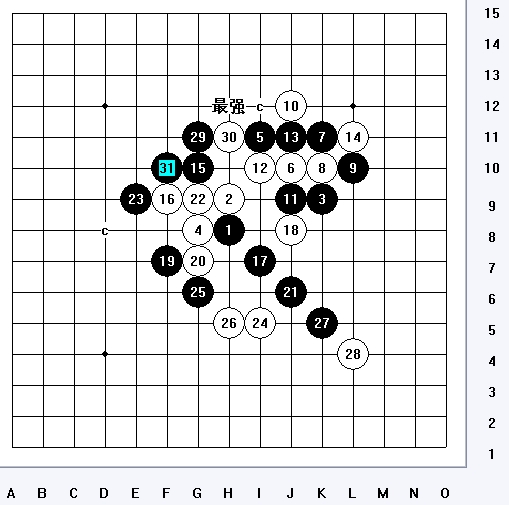
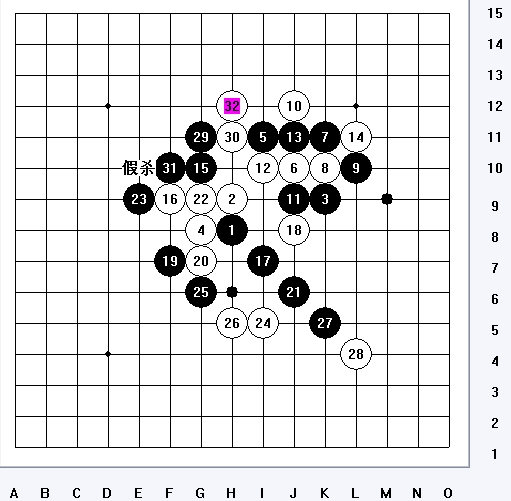
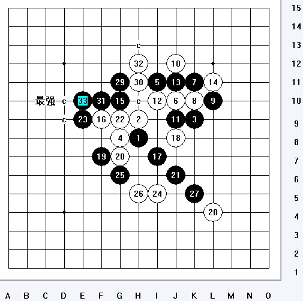
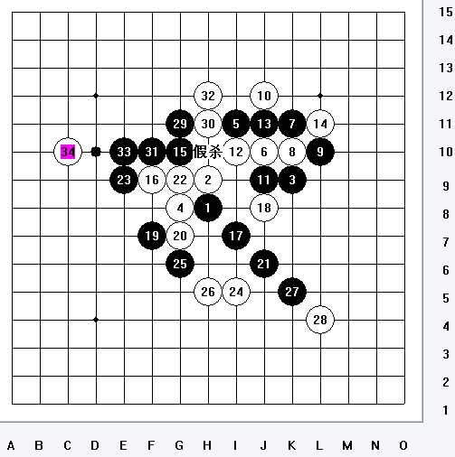
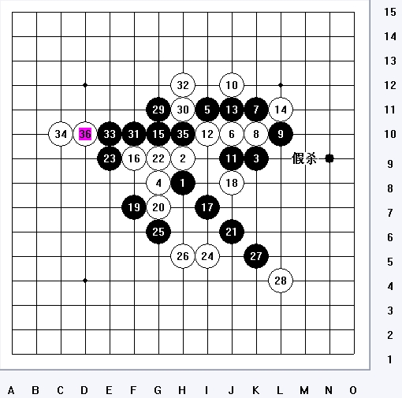
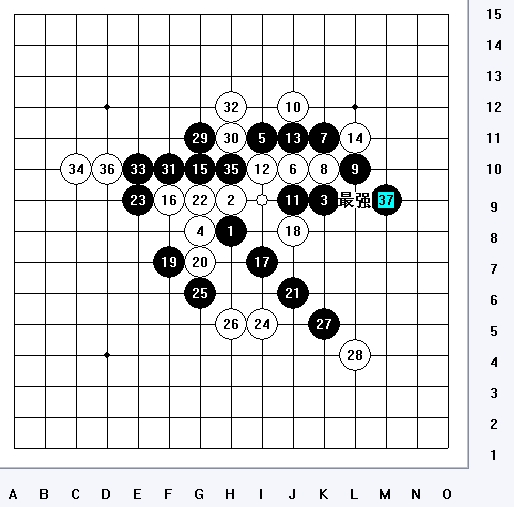
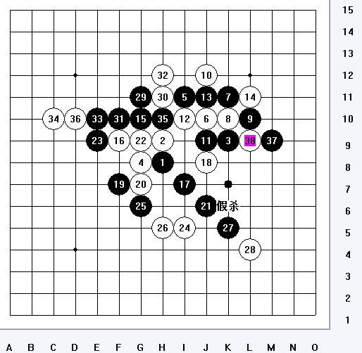
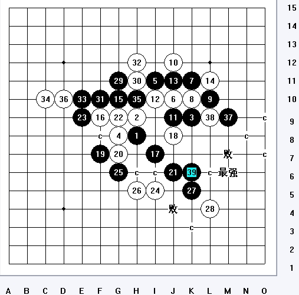
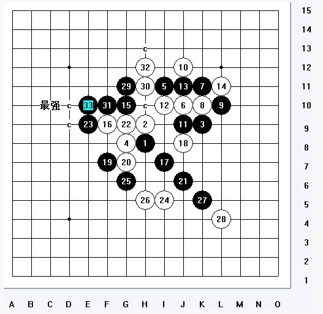

超强 VCT （9星级：残月妖刀）
#1 超强 VCT （9星级：残月妖刀）作者：刀魂 发表时间：2009-10-15 20:16:31
看看谁第一个做出来：
=======上图对应的爱五子棋谱代码如下，以便你拆解：========
h8h9k9g8i11j10k11k10l10j12j9i10j11l11g10f9i7j8f7g7j6g9e9i5g6h5
======================================================
9星级
［ 逆刃 于 2009-10-15 21:20:15 时奖励此帖[金币加 20 威望加1］
［ 逆刃 于 2009-10-15 23:05:59 时奖励此帖[金币加 20 威望加1］
［ 索非亚 于 2009-10-16 12:24:29 时花20金币送鲜花一朵］
#2 Re:超强 VCT （9星级：残月妖刀）作者：胆小的骆驼 发表时间：2009-10-15 22:32:59
=======上图对应的爱五子棋谱代码如下，以便你拆解：========
h8h9k9g8i11j10k11k10l10j12j9i10j11l11g10f9i7j8f7g7j6g9e9i5g6h5g11h11f10d8m9l9k5l4k6
======================================================
=======上图对应的爱五子棋谱代码如下，以便你拆解：========
h8h9k9g8i11j10k11k10l10j12j9i10j11l11g10f9i7j8f7g7j6g9e9i5g6h5g11h11f10h12e10d10m9l9k5l4k6m7e7e8g5f6h7i8h6i6e4
======================================================
［ 潇洒 于 2009-10-15 22:52:13 时奖励此帖[金币加 20 威望加1］
［ 潇洒 于 2009-10-15 22:52:31 时惩罚此帖，发帖者[金币减20 威望减1］
逆刃奖了，那我就不奖了。
#3 Re:Re:超强 VCT （9星级：残月妖刀）作者：胆小的骆驼 发表时间：2009-10-15 22:38:04
下面是刚拆的地毯
#4 Re:Re:Re:超强 VCT （9星级：残月妖刀）作者：胆小的骆驼 发表时间：2009-10-15 22:39:04
 残月刀VCT.rar
残月刀VCT.rar［ 逆刃 于 2009-10-15 22:52:06 时奖励此帖[金币加 20 威望加1］
［ 逆刃 于 2009-10-15 22:52:39 时奖励此帖[金币加 20 威望加1］
［ 茗弈小刀 于 2009-10-16 9:58:53 时花20金币送鲜花一朵］
［ 索非亚 于 2009-10-16 12:22:46 时花20金币送鲜花一朵］
#5 Re:超强 VCT （9星级：残月妖刀）作者：wd1988 发表时间：2009-10-15 22:52:14
骆驼很牛
［ 茗弈小刀 于 2009-10-16 10:07:22 时花20金币送鲜花一朵］
#6 Re:超强 VCT （9星级：残月妖刀）作者：逆刃 发表时间：2009-10-15 22:54:42
解答完全正确，奖励两个威望以示表扬，题目很好，解得也很好。希望以后能多看到这样的题目。图中41手及其之后的巧妙做杀很难想到，这是题目的难点所在。#7 Re:超强 VCT （9星级：残月妖刀）作者：刀魂 发表时间：2009-10-16 8:50:46
 （刀魂专用表情）这道题，我想了很久（我说的是出题目）。。。
（刀魂专用表情）这道题，我想了很久（我说的是出题目）。。。
请后面的保持队形！！！
#8 Re:Re:超强 VCT （9星级：残月妖刀）作者：茗弈小刀 发表时间：2009-10-16 10:06:44 骆驼很牛 #9 Re:超强 VCT （9星级：残月妖刀）作者：索非亚 发表时间：2009-10-16 12:27:13 #10 Re:超强 VCT （9星级：残月妖刀）作者：wd1988 发表时间：2009-10-16 13:21:31 #11 Re:超强 VCT （9星级：残月妖刀）作者：无尽 发表时间：2009-10-16 14:32:21 VCT的手段包括冲四、活三、做43杀和做VCF四种。 #12 Re:超强 VCT （9星级：残月妖刀）作者：索非亚 发表时间：2009-10-16 18:37:08 #13 Re:Re:Re:Re:超强 VCT （9星级：残月妖刀）作者：刀魂 发表时间：2009-10-16 19:50:59 ［ 逆刃 于 2009-10-15 22:52:06 时奖励此帖[金币加 20 威望加1］ ［ 逆刃 于 2009-10-15 22:52:39 时奖励此帖[金币加 20 威望加1］ ［ 茗弈小刀 于 2009-10-16 9:58:53 时花20金币送鲜花一朵］ ［ 索非亚 于 2009-10-16 12:22:46 时花20金币送鲜花一朵］ 呵呵，小骆驼，有一路，VCT 存在 BUG 甚至能不能杀还是另外一回事（个人认为 和棋 ）！ 希望你好好验证一下：（我只能告诉你：任何软都有漏洞）         #14 Re:Re:超强 VCT （9星级：残月妖刀）作者：刀魂 发表时间：2009-10-16 19:56:01 #15 Re:超强 VCT （9星级：残月妖刀）作者：白河愁 发表时间：2009-10-16 20:31:55 #16 Re:Re:超强 VCT （9星级：残月妖刀）作者：刀魂 发表时间：2009-10-16 20:57:35 你的杀法 存在严重 漏洞，我就指出你 第52手 吧，（前面也漏洞很多）： #17 Re:超强 VCT （9星级：残月妖刀）作者：无尽 发表时间：2009-10-16 21:09:38 #18 Re:超强 VCT （9星级：残月妖刀）作者：花影 发表时间：2009-10-16 22:27:10  这图不是简单杀吗？ ［ 没事摆石子玩 于 2009-10-16 22:35:31 时花20金币送鲜花一朵］ #19 Re:超强 VCT （9星级：残月妖刀）作者：没事摆石子玩 发表时间：2009-10-16 22:30:18 #20 Re:超强 VCT （9星级：残月妖刀）作者：刀魂 发表时间：2009-10-16 22:51:18 #21 Re:超强 VCT （9星级：残月妖刀）作者：花影 发表时间：2009-10-16 23:18:42 #22 Re:Re:Re:Re:Re:超强 VCT （9星级：残月妖刀）作者：胆小的骆驼 发表时间：2009-10-17 0:47:19 ［ 逆刃 于 2009-10-15 22:52:06 时奖励此帖[金币加 20 威望加1］ ［ 逆刃 于 2009-10-15 22:52:39 时奖励此帖[金币加 20 威望加1］ ［ 茗弈小刀 于 2009-10-16 9:58:53 时花20金币送鲜花一朵］ ［ 索非亚 于 2009-10-16 12:22:46 时花20金币送鲜花一朵］ 呵呵，小骆驼，有一路，VCT 存在 BUG 甚至能不能杀还是另外一回事（个人认为 和棋 ）！ 希望你好好验证一下：（我只能告诉你：任何软都有漏洞） #23 Re:超强 VCT （9星级：残月妖刀）作者：胆小的骆驼 发表时间：2009-10-17 1:10:35 首先谢谢刀魂的用心。 说明一下：这个地毯是我在拆棋的过程中完成的，当然除了a点之外有不少黑点。如上图所说的34，35在用终结者扫描后的a点是H10,至于37的位置用终结者再找一下会很快的出现a点为E11正如18楼所发的那个图黑简单必胜。 至于刀魂你所说的37为M9，在我发的地毯上就是黑点，并没标明为a点，当然你可能没注意。 如果非要放弃简单的必胜选择M9这个37的话也是可以的，对于你所标的最强一路杀法如下图： ［ 刀魂 于 2009-10-17 9:09:46 时花20金币送鲜花一朵］ #24 Re:超强 VCT （9星级：残月妖刀）作者：刀魂 发表时间：2009-10-17 8:53:33 #25 Re:超强 VCT （9星级：残月妖刀）作者：lfc 发表时间：2009-10-18 7:34:58 #26 Re:Re:超强 VCT （9星级：残月妖刀）作者：刀魂 发表时间：2009-10-28 9:43:40 引用： 强烈建议 有志 封杀此人（lfc），纯脑can一个 谱没发一个，不参与任何讨论，只会羡慕和嫉妒别人 ［ 白河愁 于 2009-10-29 4:05:07 时花50金币砸了你一个臭鸡蛋］ #27 Re:超强 VCT （9星级：残月妖刀）作者：小帮帮 发表时间：2009-12-15 18:45:07 题目还是很好的，分析得也到位，终结者有时候扫出来的a点，杀不出来是很正常的，这就是所谓的误杀。刀魂还是有一定实力，至于用不用软，多说无益，你纯人脑和手工拆一个地毯给我看看
灌灌灌灌灌灌灌灌灌灌灌灌灌灌灌灌灌灌灌灌灌灌灌灌灌灌灌灌灌灌灌灌灌灌灌灌灌
灌灌灌灌灌灌灌灌灌灌灌灌灌灌灌灌灌灌灌灌灌灌灌灌灌灌灌灌水水水灌灌灌灌灌灌
灌灌灌灌灌灌灌灌灌灌灌灌灌灌灌灌灌灌灌灌灌灌灌水水水水水水水水水灌灌灌灌灌
灌灌灌灌灌灌灌灌灌灌灌灌灌灌灌灌灌灌水水水水水水水水水水水水水水灌灌灌灌灌
灌灌灌灌灌灌灌灌灌灌灌灌灌灌灌灌灌水水水水水水水水水水水水水灌灌灌灌灌灌灌
灌灌灌灌灌灌灌灌灌灌灌灌水水水灌水水水水水水水水水水水灌灌灌灌灌罐灌灌灌灌
灌灌灌灌灌灌灌灌灌水水水水水水水灌水水灌灌水水水水水灌灌灌灌灌灌灌灌灌灌灌
灌灌灌灌灌灌水水水水水水水水水灌灌灌灌灌灌水水水水灌灌灌灌灌灌灌灌灌灌灌灌
灌灌引用：
必须的!
原文由 wd1988 发表于 2009-10-15 22:52:14 :引用：
原文由 胆小的骆驼 发表于 2009-10-15 22:39:04 :残月刀VCT.rar引用：
希望 有尽 下次自己好好验证一下，我说的是所有的 败 点，尤其注意 BUG ！！！
原文由 逆刃 发表于 2009-10-15 22:54:42 :
解答完全正确，奖励两个威望以示表扬，题目很好，解得也很好。希望以后能多看到这样的题目。图中41手及其之后的巧妙做杀很难想到，这是题目的难点所在。 引用：
原文由 白河愁 发表于 2009-10-16 20:31:55 :
=======上图对应的爱五子棋谱代码如下，以便你拆解：========
h8h9k9g8i11j10k11k10l10j12j9i10j11l11g10f9i7j8f7g7j6g9e9i5g6h5g11h11f10h12e10c10h10d10m9l9k5l4k6m6e7e8g5d8h6i6f4e3f6f5g4j5h7c8f8a8b8h4
======================================================
 自己杀不出来就假杀?楼上的图你看看再说话.完全怀疑你在误导人,据说你还在带徒弟?
自己杀不出来就假杀?楼上的图你看看再说话.完全怀疑你在误导人,据说你还在带徒弟?引用：
原文由 刀魂 发表于 2009-10-16 19:50:59 :引用：
原文由 胆小的骆驼 发表于 2009-10-15 22:39:04 :残月刀VCT.rar
=======上图对应的爱五子棋谱代码如下，以便你拆解：========
h8h9k9g8i11j10k11k10l10j12j9i10j11l11g10f9i7j8f7g7j6g9e9i5g6h5k5l4g11h11f10h12e10c10h10d10m9l9k6m6e7e8g5f6j4j5f5h7i6h6c7d8d7b7c8e6c5
======================================================
原文由 lfc 发表于 2009-10-18 7:34:58 :
刀魂下棋谁说不是用脑子，2009年科技先进脑子里面放一个黑石完全是可以的。